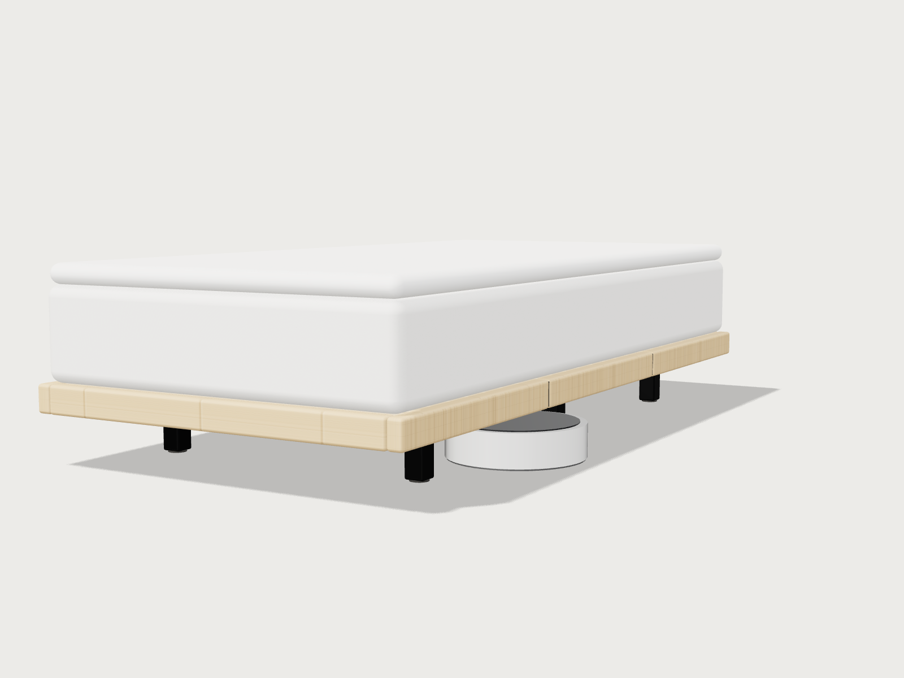
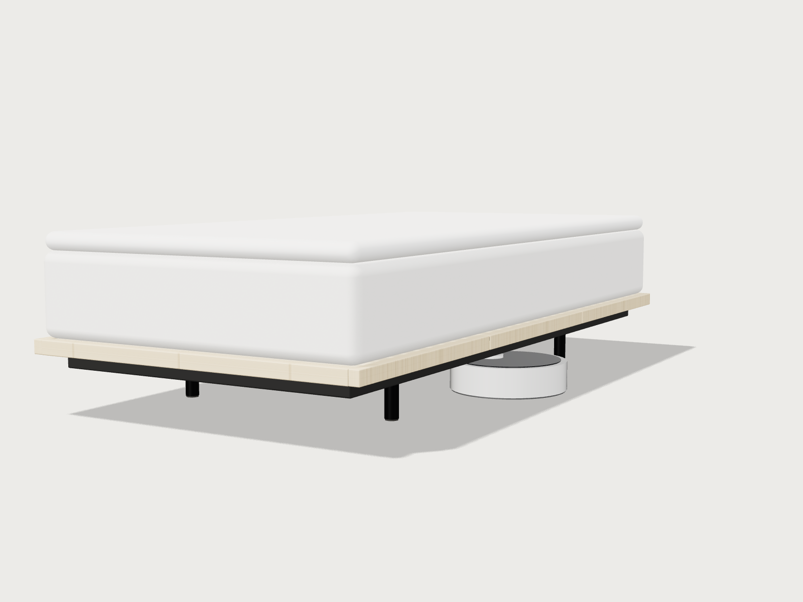
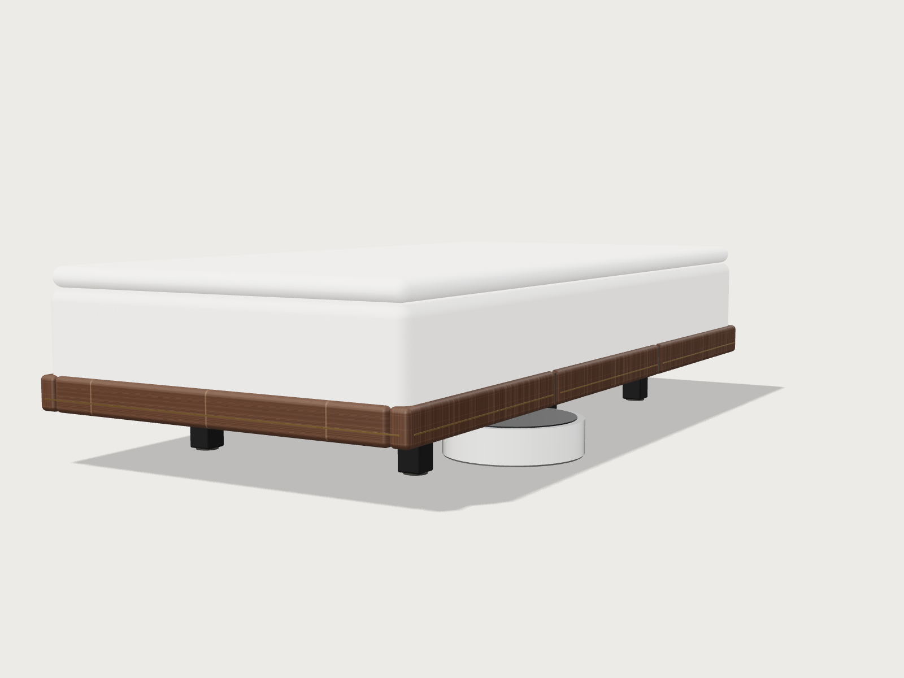
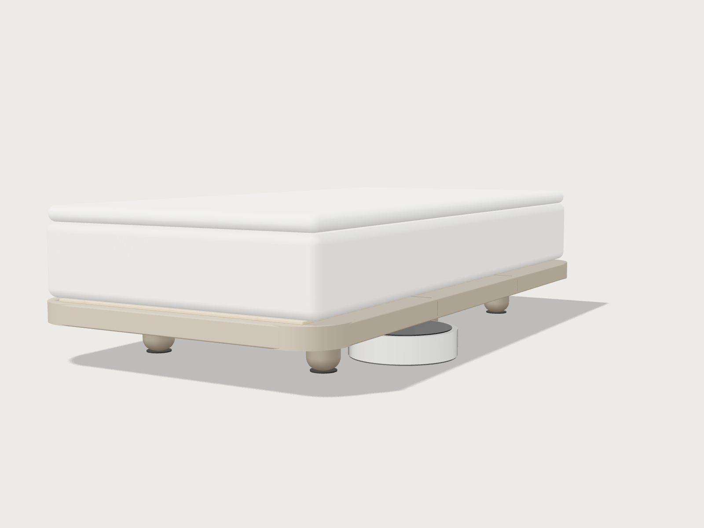
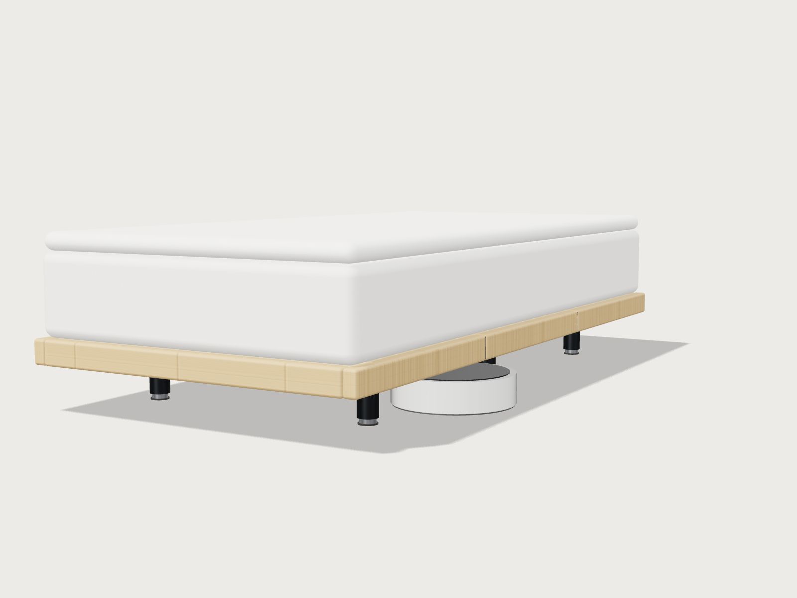
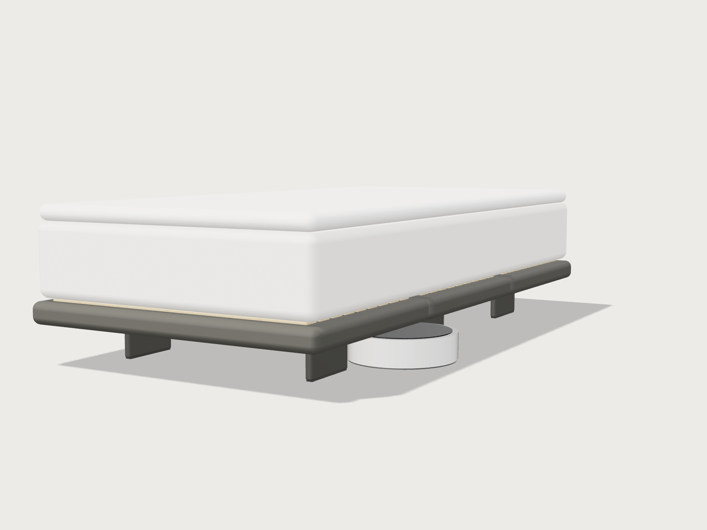
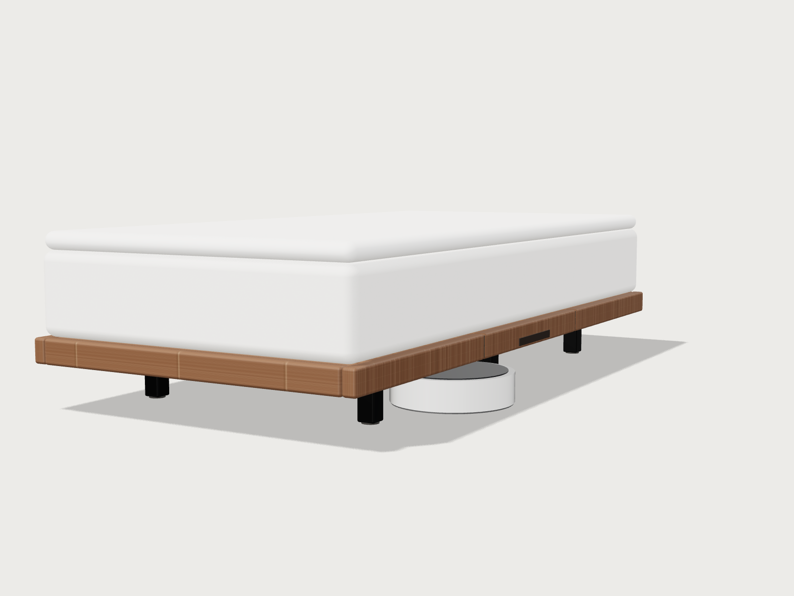
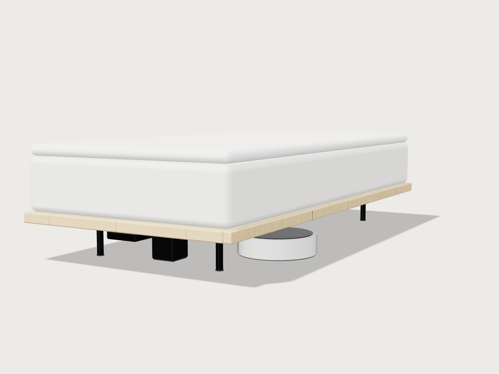
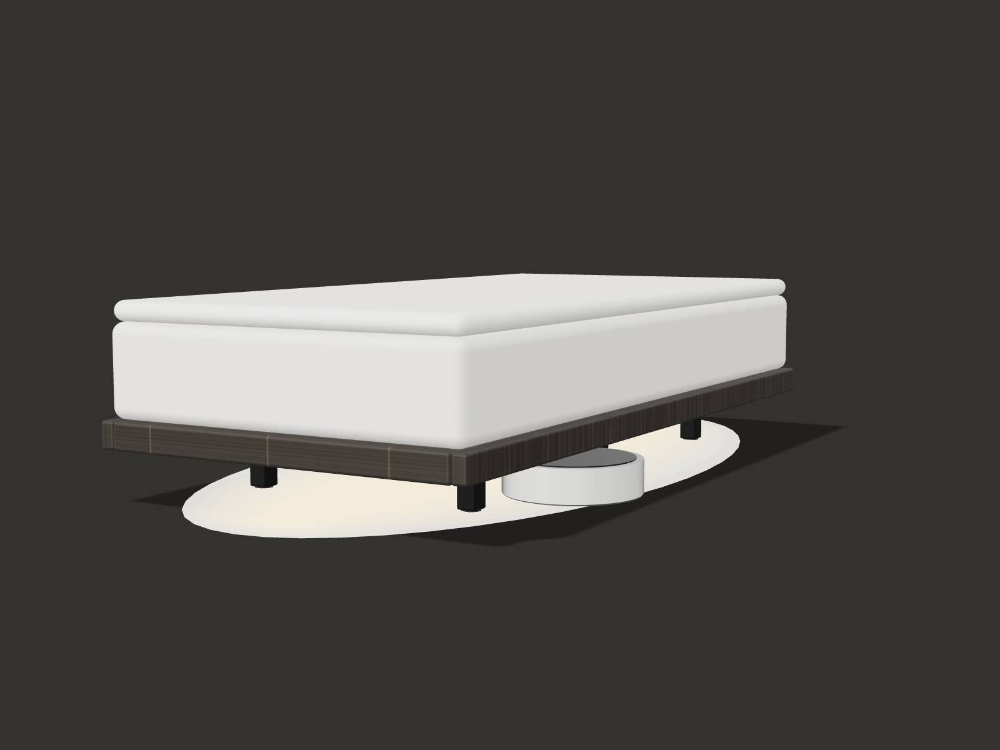
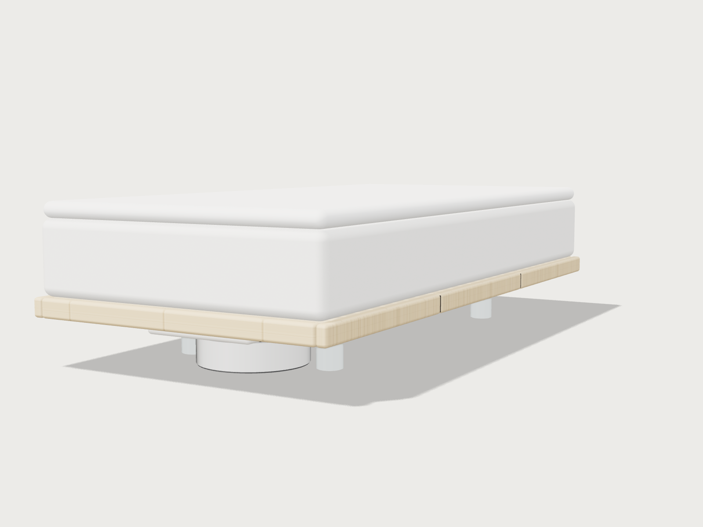

C3-01王道・市場適合型
UKI
ベッドの下まで、美しい。

C3-02ミニマル
KAGE
見えるのは、竹の線と影だけ。
RECOMMENDED

C3-03プレミアム
RIN
マットレスを竹の器に沈め、脚は闇に消す。

C3-04トレンド
KUMO
角のない雲が、床の上に浮かぶ。
RECOMMENDED

C3-05機能特化
NOBI
1本の脚で、床下を3段に。

C3-06素材特化
SUMI
竹と竹炭で、継ぎ目のない器をつくる。
RECOMMENDED

C3-07UX改善
TATERU
立てたまま、脚を差す。緑が見えたら、倒すだけ。

C3-08構造革新
HARI
背骨1本で支え、縁は薄く、床はほぼ全部あける。

C3-09少し挑戦的
TERASU
ベッドの下を、隠さず照らす。

C3-10コンセプトモデル
KUU
床に触れず、掃除する者も住まわせる。